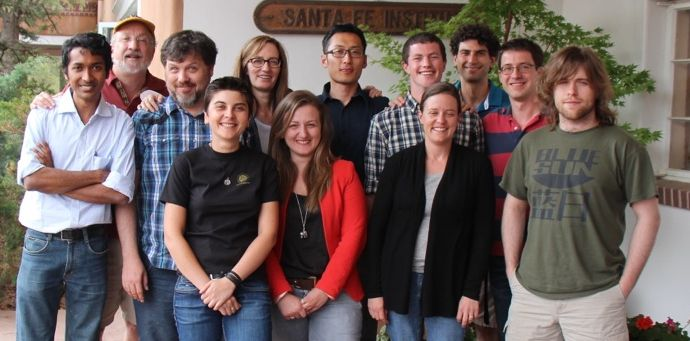
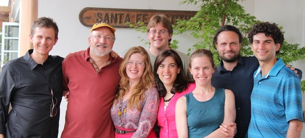

20th! Annual Workshop
2014 Graduate Workshop in Computational Social Science Modeling and Complexity
Santa Fe Institute
, 22 June to 5 July, 2014
 
Program Announcement
Students
Faculty
Reading List
Schedule
Homework Problem
Student Projects
GWS Wiki
Return to
Computational Economics
page.
John H. Miller
, miller@santafe.edu.